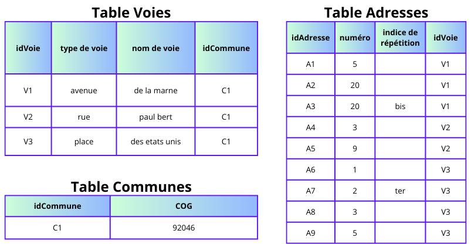

Identification d’adresses avec ElasticSearch
Raya Berova & Benoît Hurpeau (DMRG)
28 novembre 2024
Plan de la présentation
1️⃣ Contexte
2️⃣ Utilisation du référentiel Gaïa
3️⃣ Moteur de recherche ElasticSearch
4️⃣ Algorithme d’identification d’adresses
5️⃣ Performances de l’algorithme d’identification
6️⃣ Discussion
1️⃣ Introduction
Origine du projet
- Besoin d’un référentiel complet, stable, fiable, mis à jour.
- Faciliter la gestion des adresses au sein du SSP.
- Clients : Résil, Géoloc, DMTR…
Gaïa : Référentiel Géographique d’Adresses avec Informations Géolocalisantes.
Une adresse
20 bis avenue de la marne 92049
Géométrie de l’adresse
Exemple: 88 avenue verdier 92049 reliée à sa parcelle

Le référentiel Gaïa
Identifiants Gaïa
Identifiant unique et stable pour assurer le suivi des objets dans le temps.
Trois niveaux :
- Identifiant adresse
- Identifiant voie
- Identifiant commune
Ceci permet la prise en charge des cissions et fusions de communes.
Construction du référentiel
Sources fiables :
- Majic : Mise à jour des informations cadastrales.
- BAN : Base Adresse Nationale.
- RCA : Référentiel Commun d’Adresses.
Au moins une mise à jour par mois (avec conservation des identifiants Gaïa).
D’autres données
- Polygones du bâti
- Polygones Parcelles du cadastre
- Liens code postaux - libellés commune - COG
- Polygones QPV
Pas d’identifiant Gaïa, donc pas de suivi dans le temps de ces objets.
Exemples de géométries
Exemple de géométries d’adresses, parcelles et bâtis

Quelques métriques sur le référentiel
- Nombre d’adresses ≃ 27 millions.
- Nombre de voies ≃ 3 millions.
Plan de la présentation
1️⃣ Contexte
2️⃣ Utilisation du référentiel Gaïa
3️⃣ Moteur de recherche ElasticSearch
4️⃣ Algorithme d’identification d’adresses
5️⃣ Performances de l’algorithme d’identification
6️⃣ Discussion
2️⃣ Utilisation du référentiel Gaïa
Différents besoins au sein du SSP
- Résil : identifier le(s) adresse(s) des individus pour sélectionner la plus récente.
- Géoloc : identification du référentiel Géoloc et génération de leur nouveau référentiel.
- Autres utilisateurs possibles :
- Identification des adresses sur les certificats de décès.
- Identification des adresses de Sirus.
- Identification des adresses sur les certificats de décès.
Regroupements d’adresses
Nouvel objet géographique : le lieu géographique.
schéma à venir
Le lieu géographique
Utilisation : Regrouper les adresses avec différents identifiants Gaïa mais qui représentent le même lieu.
Exemple : plusieurs adresses pour une même maison si elle a différentes entrées → même lieu géographique.
Besoin d’identification des adresses textuelles
Trouver l’identifiant d’adresse à partir d’un libellé d’adresse plus ou moins correcte.
- Besoin récurrent au sein du SSP.
- Indispensable pour construire et mettre à jour le référentiel.
Il faut donc un moteur de recherche ⚙️.
Plan de la présentation
1️⃣ Contexte
2️⃣ Utilisation du référentiel Gaïa
3️⃣ Moteur de recherche ElasticSearch
4️⃣ Algorithme d’identification d’adresses
5️⃣ Performances de l’algorithme d’identification
6️⃣ Discussion
3️⃣ Moteur de recherche ElasticSearch
C’est quoi ElasticSearch ?
ElasticSearch : logiciel pour l’indexation et la recherche de données.
Utilisation en pratique avec Python : packages elasticsearch et elasticsearch-dsl.
Pourquoi ElasticSearch pour la recherche textuelle ?
| Critères | ElasticSearch | SQL | Addok |
|---|---|---|---|
| Recherche de texte avancée | ✅ | ❌ | ✅ |
| Personnalisation des recherches | ✅ | ❌ | ❌ |
| Rapidité | ✅ | ✅ | ✅ |
| Précision | ✅ | ❌ | ⚠️ |
| Facilité d’implémentation | ❌ | ✅ | ✅ |
| Ressources | ❌ | ✅ | ✅ |
| Maintenance | ⚠️ | ✅ | ❌ |
Outils pour moteur ElasticSearch
- Mappings 🏷️ : spécifier les traitements à appliquer pour chaque variable de nos données.
- Variable_a → Analyzer_for_numbers
- Variable_b → Analyzer_for_address_text
- Variable_c → Analyzer_for_address_text
- Variable_a → Analyzer_for_numbers
- Settings 🛠️ : définir les différents traitements.
- Analyzer_for_numbers → Filtre_α, Filtre_β + Tokenizer_1
- Analyzer_for_address_text → Filtre_γ, Filtre_δ, Filtre_ε + Tokenizer_2
- Analyzer_for_numbers → Filtre_α, Filtre_β + Tokenizer_1
- Requêtes 🔍 : recherche sur les variables définies dans les mappings.
On peut commencer à créer notre moteur ⚙️.
Étape 1 : pouvoir comparer l’adresse recherchée avec les données Gaïa.
Filtres
- Définis dans les settings 🛠️.
- Normalisent les données.
- Pour les données du référentiel et pour les adresses recherchées.
Filtres implémentés
- Lowercase
- Asciifolding
- Ponctuation
- Séparation des nombres et lettres (ex : 14bis → 14 bis)
- Suppression des espaces supplémentaires
- Dillatation des accronymes/prise en compte des synonymes
Étape 2 : définir un score.
Base de données classique
Exemple
| idVoie | nom de voie |
|---|---|
| A | du general leclerc |
| B | du general charles de gaulle |
| C | du point du jour |
| D | verdier |
| E | des cours |
Recherche par token
- Un token = un mot.
- Pour chaque nom de voie du référentiel, compter le nombre de tokens qui matchent 🎯 avec les tokens de l’adresse recherchée.
Score avec tokenizer “token”
Pour retourner la voie la plus pertinente, on construit un score pour chaque voie : \[ score_{voie} = \sum_{\text{∀t} \in \text{T}} {nb\_occurrence}_t \]
t = token
T = ensemble des tokens de l’adresse recherchée
Score avec tokenizer “token”
Exemple : score avec tokenizer “token” de “88 avenue du general charles de gaulle”
| idVoie | nom de voie | score |
|---|---|---|
| A | du general leclerc | 2 |
| B | du general charles de gaulle | 5 |
| C | du point du jour | 2 |
| D | verdier | 0 |
| E | des cours | 0 |
Dans une grande base de données, c’est extrêmement long.
Étape 3 : utiliser un index inversé. Mais qu’est ce donc ?
Index inversé token
Exemple
| idVoie | nom de voie |
|---|---|
| A | du general leclerc |
| B | du general charles de gaulle |
| C | du point du jour |
| D | verdier |
| E | des cours |
| token | occurrences |
|---|---|
| general | {“A”: 1, “B”: 1} |
| jour | {“C”: 1} |
| du | {“A”: 1, “B”: 1, “C”: 2} |
| cours | {“E”: 1} |
| … | … |
Comptage direct ⚡ des occurrences de chaque token de la base par idVoie.
Étape 4 : prendre en compte les variations textuelles.
Recherche par n-grams de caractères
Contourner les fautes d’orthographes : chaque token est découpé en sous-chaînes de n caractères consécutifs.
Exemple de découpage en 3-grams de caractères du texte “avenue verdier” :
ave, ven, enu, nue, ver, erd, rdi, die, ier
Index inversé 3-grams
Exemple
| idVoie | nom de voie |
|---|---|
| A | du general leclerc |
| B | du general charles de gaulle |
| C | du point du jour |
| D | verdier |
| E | des cours |
| 3-gram | occurrences |
|---|---|
| gen | {“A”: 1, “B”: 1} |
| char | {“B”: 1} |
| our | {“C”: 1, “E”: 1} |
| oin | {“C”: 1} |
| … | … |
Score avec tokenizer “n-grams”
Score pour chaque voie : \[ score_{voie} = \sum_{\text{∀ngram} \in \text{N}} {nb\_occurrence}_{ngram} \]
N = ensemble des n-grams de l’adresse recherchée
Limites des n-grams
\[ \downarrow \text{taille n-grams} \Rightarrow \text{taille index inversé} \uparrow \Rightarrow \text{temps de recherche} \uparrow \]
Limitation à minimum n∈{3,4,5} pour notre cas.
Fuzziness
Contourner les fautes d’orthographes d’une autre façon : fuzziness.
Pour matcher 🎯 deux tokens avec une fuzziness de niveau 1 = corriger l’un des tokens :
- Ajout d’une lettre.
- Suppression d’une lettre.
- Remplacement d’une lettre.
- Échanger deux lettres de place.
Score global
Le score global va donc combiner la somme des matchs 🎯 au niveau :
- token.
- n-grams.
- fuzziness.
Boost
On peut donner plus ou moins d’importance aux différents matchs 🎯.
Chaque occurrence est multipliée par un facteur, appelé boost, qui dépend du niveau de match 🎯.
Boosts dans Gaïa
| match au niveau | boost | exemple |
|---|---|---|
| token | 20 | “verdier” avec “verdier” |
| fuzzi 1 | 15 | “verdier” avec “verdie” |
| 3-grams | 1 | “ver” avec “ver” |
| 4-ngrams | 1 | “erdi” avec “erdi” |
| 5-grams | 1 | “verdi” avec “verdi” |
Exemple : recherche de “88 avenue verdier” et dans la base il y a la voie D : “verdier”.
Retour sur le score global
\[ score_{voie} = \sum_{\text{∀n} \in \text{N}} \sum_{\text{∀sc} \in \text{n}} boost_{n}*{nb\_occurrence}_{sc} \]
N = ensemble des niveaux (niveau token, niveau fuzzi…)
n = niveau
sc = sous-chaîne (un token, un 3-grams…)
Configurer le moteur ⚙️
Une fois qu’on a la théorie, il faut l’appliquer en pratique.
Le package elasticsearch permet d’indexer les données en fournissant :
- Un dataframe 📋 des données du référentiel Gaïa.
- Des settings 🛠️ où on définit nos différents analyzers, englobant les filtres et le tokenizer.
- Des mappings 🏷️ où pour chaque variable, on fournit un analyzer.
Faire des recherches
Une fois le moteur configuré, on peut faire des requêtes 🔍.
Requête pour retrouver la voie :
- Match 🎯 token sur nom de voie avec fuzzi 1 → boost 20.
- Match 🎯 token sur type de voie ou nom de voie → boost 15.
- Match 🎯 3 à 5-grams sur nom de voie → boost 1.
À chaque fois qu’une sous-chaîne valide l’une de ces conditions, le score va ⇡ en fonction du boost associé.
Plan de la présentation
1️⃣ Contexte
2️⃣ Utilisation du référentiel Gaïa
3️⃣ Moteur de recherche ElasticSearch
4️⃣ Algorithme d’identification d’adresses
5️⃣ Performances de l’algorithme d’identification
6️⃣ Discussion
4️⃣ Algorithme d’identification d’adresses
Algorithme d’identification d’adresses

Indicatrice qualité
- Dépend du pourcentage de 3-grams de la [voie du référentiel].{.blue2} ⊂ l’adresse recherchée.
- Calcul non réalisable avec Elastic, donc effectué post requête.
| Voie qualifiée de | Pourcentage de 3-grams |
|---|---|
| sûre | ≥ 65% |
| peu douteuse | 35% ≤ x < 65% |
| douteuse | 10% ≤ x < 35% |
| non retrouvée | < 10% |
Exemple : 80% des 3-grams de “verdier” dans “88 avenue verdie”.
Valeurs de l’indicatrice qualité
| Valeur | idGaïa maximum retrouvé |
|---|---|
| 6 à 10 | idAdresse |
| 3 à 5 | idVoie |
| 2 | idCommune |
| 0 à 1 | Aucun |
Distance entre la 1ère et la 2ème voie la plus pertinente
\[ \text{ratio} = 1 - \frac{R_2}{R_1} \]
R1 = score Elastic de la 1ère voie la plus pertinente
R2 = score Elastic de la 2ème voie la plus pertinente
Plus le ratio est proche de 1, plus le résultat retourné est loin de la 2ème proposition.
Plan de la présentation
1️⃣ Contexte
2️⃣ Utilisation du référentiel Gaïa
3️⃣ Moteur de recherche ElasticSearch
4️⃣ Algorithme d’identification d’adresses
5️⃣ Performances de l’algorithme d’identification
6️⃣ Discussion
5️⃣ Performances de l’algorithme d’identification
Constitution d’un jeu de test
Jeu de test d’adresses pasrau x resil x majic x gaia
Explications
Évaluation de l’algorithme d’identification
Sur 100 000 adresses sur tout le territoire français :
| Adresse trouvée | Voie trouvée | Commune trouvée/rien trouvé | |
|---|---|---|---|
| Pourcentage | 86,0% | 99,5% | 0,5% |
| Accuracy | 0.94 | 0.94 | x |
Rapidité de l’algorithme
2 secondes pour 500 adresses
Démonstration en utilisant l’API Gaïa.
Plan de la présentation
1️⃣ Contexte
2️⃣ Utilisation du référentiel Gaïa
3️⃣ Moteur de recherche ElasticSearch
4️⃣ Algorithme d’identification d’adresses
5️⃣ Performances de l’algorithme d’identification
6️⃣ Discussion